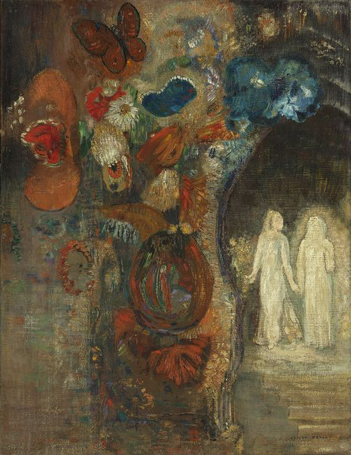

16 June 2025
the wind insists

dear you,
evening slips its fingers through lichen and wire,
slow as a thought you can’t quite name
brushing the edges of everything you desire,
but don’t dare reach for.
you stand where the field begins to thin
and let the cold decide what you become,
like breath given but never drawn in.
a gate swings open, then stays.
not quite invitation.
the wind always insists on return,
only proving how thin the distance is
between hunger
and the will to turn away.
you are not waiting. only noticing the air,
each time it returns with nothing to bear.
as if absence were a language
you’ve only just begun to learn,
its meaning always just out of reach.
and still, you hesitate
while the wind pretends to answer
and you pretend to understand.
yours, kate
(artwork: apparition by odilon redon)